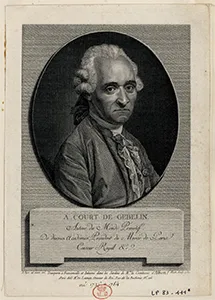
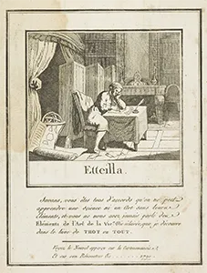
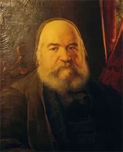
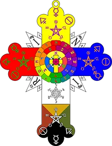
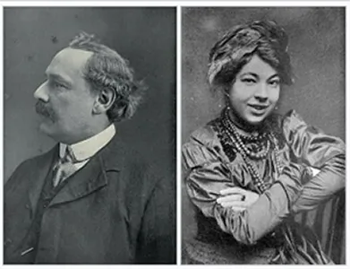
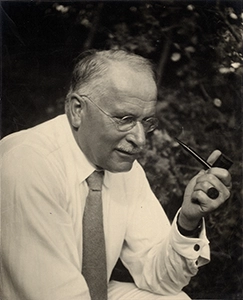
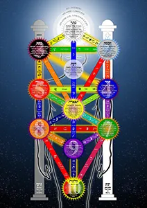

From Tarocchi to Tarot
The Enlightenment Transformation
The spiritual pilgrimage did not jump straight from the Middle Ages to the modern era. Its most critical evolution occurred in 18th-century Paris. During the Enlightenment, Tarot transformed from a secular medieval trick-taking game into a deeply symbolic map of the human psyche. This shift was born in the intellectual salons of Paris, where rationalism collided with a profound fascination for ancient mysteries, early archaeology, and speculative Freemasonry.
Antoine Court de Gébelin (1781): The Egyptian Myth is Born

In 1781, a French scholar, former Protestant minister, and prominent Freemason named Antoine Court de Gébelin forever changed the course of Tarot history.
The Discovery: While visiting a Parisian salon in the late 1770s, de Gébelin observed a group of aristocrats playing the traditional game of Tarocchi using a standard Tarot de Marseille deck. Looking past the trivial card-playing rules, he experienced an intuitive flash, concluding that the bizarre imagery was a surviving fragment of a lost ancient civilization.
The Book of Thoth: In the eighth volume of his massive, multi-volume encyclopedia, Le Monde Primitif, de Gébelin published the first documented essays claiming Tarot was the sacred, lost "Book of Thoth" from Ancient Egypt. He argued the Major Arcana were hieroglyphs containing timeless spiritual secrets, preserved in plain sight under the guise of a gambling deck.
The Catalyst for Change: Though his theory lacked any genuine historical or linguistic proof—predating the decoding of actual Egyptian hieroglyphs by decades—it captured the imagination of the European elite, permanently shifting the public view of the deck away from parlor gameplay toward fortune-telling, mysticism, and divination.
The Comte de Mellet: The Hidden Linguistic Missing Link
Hidden within that exact same 1781 volume of Le Monde Primitif was an accompanying, anonymous essay written by de Gébelin's close associate, the Comte de Mellet (Louis-Raphaël-Lucrece de Fayolle).
- The Alphabetic Genesis: While de Gébelin focused heavily on the Egyptian narrative, it was the Comte de Mellet who published the very first basic structural system linking the 22 Tarot Trumps directly to the 22 letters of the Hebrew Alphabet.
- The Cosmic Order: De Mellet argued that the cards should be read in descending numerical order (from Trump 21 down to 1), mapping them sequentially against the letters to trace a cosmic descent of the human soul into the physical world. This brief essay served as the raw, hidden blueprint for all of Western ceremonial magic.
Etteilla (1789): The First Professional Tarot Reader

The Pioneer: Jean-Baptiste Alliette, working under the pseudonym Etteilla (an exact anagram of his last name), was a former Parisian hairdresser and printmaker who became the world's first professional, commercial tarotist.
The Divination Deck:In 1789, amidst the chaos of the French Revolution, Etteilla published Le Livre de Thot, the first deck structurally designed from the ground up exclusively for cartomancy rather than card-playing. He modified the traditional Renaissance artwork to forcefully align the illustrations with his personal vision of Egyptian hermetic secrets.
The Legacy of Practice: Etteilla invented the practical concepts modern readers take for granted today. He printed explicit keywords directly onto the card margins, created the first formal layouts (spreads), and introduced reversed card meanings—assigning a completely different interpretation if a card appeared upside down on the table.
Éliphas Lévi (1854): Synthesizing the Kabbalah

The Magus: Alphonse Louis Constant, writing under the Hebrew translation of his name, Éliphas Lévi, was a former Catholic seminarist turned radical occult philosopher.
The Architectural Synthesis: In his landmark 1854 book, Dogme et Rituel de la Haute Magie, Lévi took the Comte de Mellet's basic alphabetic concept and executed the ultimate structural synthesis. He mapped the 22 Major Arcana cards explicitly onto the 22 paths connecting the Sephiroth on the Kabbalistic Tree of Life.
The Modern Blueprint: This mathematical unification linked Tarot irrevocably to Western high magic. Furthermore, Lévi popularized the iconic, dualistic image of the Sabbatic Goat (Baphomet), which served as the direct visual inspiration for how occultists depicted carnal entrapment. Without Lévi’s profound kabbalistic restructuring, the British Hermetic Orders of the late 19th century would have had no foundation to build upon.
The British Occult Movement and Jungian Psychology
The Golden Dawn: Code-Breaking the Archetypes

Building on the mystical foundation laid in France, the Hermetic Order of the Golden Dawn in late 19th-century London took de Gébelin's esoteric ideas and structured them into a cohesive system. They synthesized Tarot with Astrology, Alchemy, and the Kabbalah, mapping the 22 Major Arcana cards onto the paths of the cosmic Tree of Life.
By the late 1890s, the Hermetic Order of the Golden Dawn revolutionized how cards were physically handled and interpreted. They shifted the focus away from simple fortune-telling toward high-level esoteric analysis. To do this, the Order established a comprehensive scriptural blueprint known as "Book T" (written by MacGregor and Moina Mathers), which paired specific shuffling operations with calculations based on astrology and the Kabbalah.
The Rider-Waite-Smith Milestone (1909)

Golden Dawn members Arthur Edward Waite and artist Pamela Colman Smith stripped away the remnants of the French playing card designs to create the Rider-Waite-Smith (RWS) deck. Smith replaced geometric pip patterns with deeply expressive, illustrated scenes, creating the visual standard for modern divination.
Carl Jung and the Archetypes of the Subconscious

In the 20th century, Swiss psychologist Carl Jung provided the scientific framework that validated what de Gébelin and the Golden Dawn sensed. Jung realized that human beings across all cultures share a Collective Unconscious filled with universal, inherited themes. He explicitly recognized Tarot as an intuitive tool for exploring these psychological patterns, identifying the Major Arcana as visible representations of Archetypes:
- The Empress / The Mother: The instinctual archetype of nurturing, nature, and raw creation.
- The Emperor / The Father: Structure, authority, law, and societal order.
- The Hermit / The Wise Old Man: The inner guide, introspection, and wisdom gained through isolation.
- The Shadow (The Devil): The repressed, unacknowledged, or darker elements of our own personality.
From Gaming Rules to Divinatory Spreads
When Tarot initially moved from a Renaissance parlor game into a tool for divination during the late 18th century, early practitioners did not use small, structured layouts like a "Three-Card Spread." Instead, early readers like Etteilla and Mlle Lenormand utilized sweeping, complex card operations. They would routinely shuffle and deal out nearly the entire 78-card deck across massive grids, tables, or concentric circles to form complete, synchronized life timelines for their clients.
The "Book T" System & The Opening of The Key

The Philosophy of "Book T"
According to the original Book T system, cards do not have flat, isolated meanings. Instead, the reading process behaves like an organic chemical reaction:
- Elemental Dignities: Cards modify one another based on their elements (Fire, Water, Earth, Air). For example, a card from the suit of Swords (Air) sitting next to a card from the suit of Wands (Fire) becomes incredibly active and strong, whereas a card from the suit of Cups (Water) will visually "quench" and weaken a neighboring card from the suit of Wands (Fire).
- The Significator: Before a single card is dealt, the reader manually extracts one Court Card from the deck to represent the person receiving the reading (the Significator), matching their physical description or astrological sun sign.
The Traditional Multi-Tiered Layout
The master layout detailed in Book T is known as The Opening of the Key. Rather than pulling cards into a small, fixed shape, it functions as a highly methodical 5-operation layout system:
- First Operation (The Four Piles): The deck is cut by the client into four distinct piles from right to left. These piles correspond directly to the letters of the Hebrew divine name, YHVH (Yod, Heh, Vav, Heh), which simultaneously represent the four cosmic realms of Life, Business/Career, Love/Relationships, and Physical Manifestation.
- The Counting Method: The reader turns the piles face up and physically counts through the cards using a specialized mathematical algorithm based on the card’s inherent numerical value (e.g., counting forward 11 steps for an Ace, or 12 steps for a Knight) to map a continuous path of fate.
Book-T Layout Demonstration
Watch Benebell Wen demonstrate a the Book-T layout in her video "Master the General Reading (Paul Foster Case, 1947)".
Video walkthrough demonstrating a Book T Tarot reading walkthrough.
YouTube Link
Can't see the video? Watch "Master the General Reading (Paul Foster Case, 1947)" on YouTube.